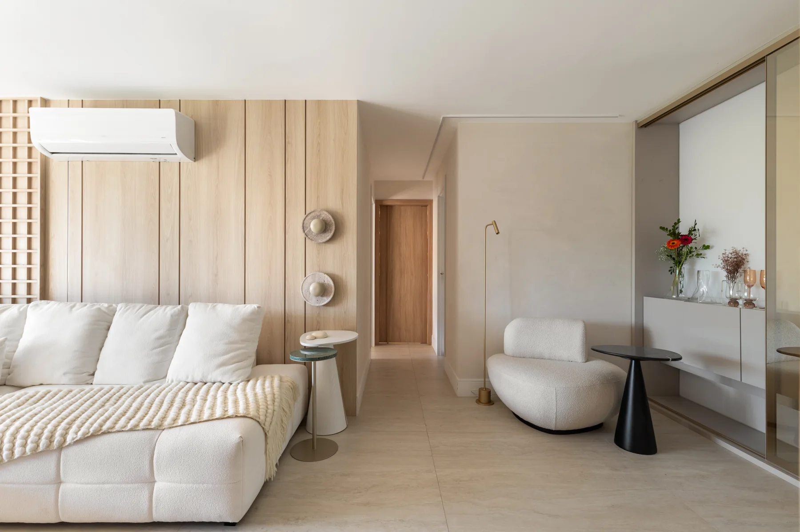
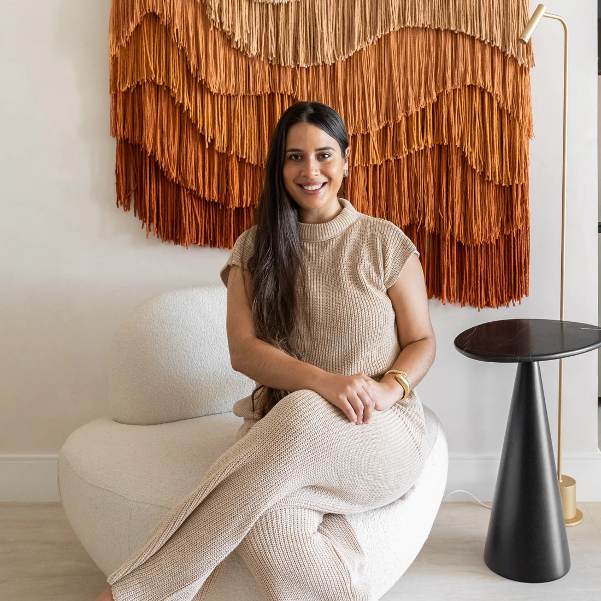

{kind=link}
{kind=link}
Para morar
Projetos residenciais e interiores que aproximam conforto, personalidade e os gestos do dia a dia.

Arquitetura que aproxima a beleza
daquilo que faz sentido para você.
Do morar ao receber, uma seleção de projetos que revela nosso encontro com os materiais, a luz e a vida cotidiana.
Madeira clara, texturas e formas suaves em uma composição de interiores que convida a permanecer.
Cada uso pede uma resposta própria. Nosso trabalho conecta as necessidades de quem ocupa o espaço à escolha de materiais e à composição dos ambientes.
Projetos residenciais e interiores que aproximam conforto, personalidade e os gestos do dia a dia.
Clínicas e consultórios com um olhar especializado em arquitetura da saúde, acolhimento e organização dos espaços.
Ambientes comerciais pensados a partir de sua atividade e da experiência de quem chega.
À frente do escritório, Shailla Barbe Fernandes desenvolve projetos de arquitetura e interiores com atenção à maneira como cada ambiente é vivido.
A leitura do espaço e a compreensão da rotina abrem caminho para as escolhas do projeto. Materiais, luz e mobiliário se encontram em uma arquitetura contemporânea, com presença e acolhimento.
